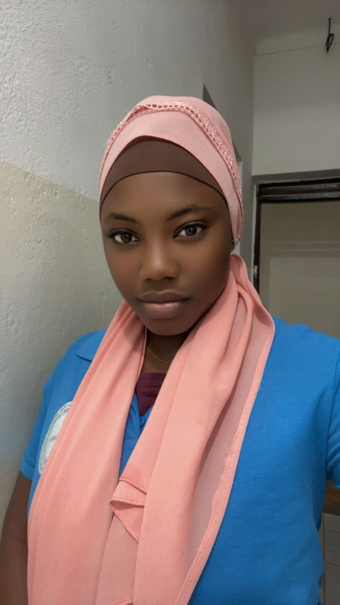

Sou Fatima Fati estudante de Engenharia de Informática e criei este site para falar de Biodiversidade da Guiné-Bissau. O objectivo do trabalho é mostrar a importância da fauna, da flora e da conservação da natureza do nosso país .
Se deseja saber mais sobre a Biodiversidade da Guiné-Bissau entre em contato conosco através do nosso formulário em baixo.
